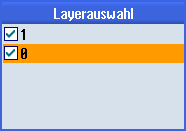

Beim Öffnen einer DXF-Datei werden alle enthaltenen Layer dargestellt.
Sie haben die Möglichkeit, Layer, die keine kontur- oder positionsrelevanten Daten enthalten, aus- und wieder einzublenden.
Voraussetzung
Die DXF-Datei ist im Programm-Manager bzw. im Editor geöffnet.
Vorgehensweise
| | 1. | Drücken Sie die Softkeys "Bereinigen" und "Layerauswahl", wenn Sie bestimmte Ebenen ausblenden wollen. Das Fenster "Layerauswahl" wird geöffnet. |
 |
| | |  |
 | 2. | Deaktivieren Sie die gewünschten Ebenen und drücken Sie auf den Softkey "OK". |
| | | - ODER - |
| | | Drücken Sie den Softkey "Automat. bereinigen", um alle nicht relevanten Ebenen auszublenden. |
| | 3. | Drücken Sie den Softkey "Automat. bereinigen" erneut, wenn Sie die Ebenen wieder einblenden wollen. |